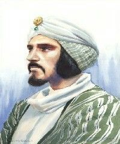

Who Was Al-Kindi?
Al-Kindi (Abū Yūsuf Yaʿqūb ibn Isḥāq al-Kindī, c. 800–870 CE) was a major philosopher, mathematician, scientist, and intellectual of the early Islamic world. He is widely regarded as the first self-identified philosopher in the Arabic philosophical tradition and became a foundational figure in the development of Arabic and Islamic philosophy. Later writers gave him the title “the Philosopher of the Arabs”, reflecting his distinctive position in the history of philosophy.
Al-Kindi lived during the Abbasid period and pursued much of his intellectual career within the scholarly culture of Baghdad. He was closely connected with the ninth-century movement through which Greek philosophical and scientific works were translated into Arabic. Al-Kindi worked with a circle of translators and scholars who made important texts associated with Aristotle, Neoplatonism, mathematics, astronomy, and other ancient sciences available to Arabic-speaking intellectuals.
His importance, however, was not limited to the transmission of Greek learning. Al-Kindi helped develop an Arabic philosophical vocabulary and used ideas drawn from Aristotle and the Neoplatonic tradition to address questions concerning God, creation, the soul, intellect, knowledge, nature, and the structure of the universe. He treated philosophy as a search for truth and argued that truth should be accepted regardless of the cultural tradition from which it originated.
Al-Kindi did not simply reproduce Greek philosophy. He adapted and combined inherited ideas in ways shaped by the intellectual and religious concerns of the Islamic world. His thought contains both Aristotelian and strongly Neoplatonic elements, yet he developed original positions on subjects such as the unity of God, the finitude of the world, intellect, and the relationship between mathematics and scientific knowledge.
For this reason, Al-Kindi represents an important beginning in the history of falsafa, the philosophical tradition that developed through engagement with Greek philosophy in the Arabic- speaking world. His work helped establish the intellectual foundations upon which later philosophers such as Al-Farabi, Avicenna, and Averroes would build, even though each would eventually develop philosophical systems very different from his own.
Al-Kindi: Quick Facts
- Full name — Abū Yūsuf Yaʿqūb ibn Isḥāq al-Kindī
- Known as — Al-Kindi or Alkindus
- Born — c. 800 CE
- Died — c. 870 CE
- Associated with — Basra and Baghdad
- Philosophical tradition — Early Arabic and Islamic philosophy
- Major influences — Aristotle, Neoplatonic philosophy, mathematics, and Greek science
- Major philosophical subjects — Metaphysics, theology, intellect, soul, epistemology, cosmology, and ethics
- Famous work — On First Philosophy
- Other important work — On the Intellect
- Important ethical work — On Dispelling Sorrows
Al-Kindi's Early Life and Historical Background

Al-Kindi was born around 800 CE in Basra and belonged to the Arab tribe of Kinda, a lineage that later contributed to his reputation as the “philosopher of the Arabs.” His early life unfolded during the Abbasid period, when Iraq had become one of the major intellectual centers of the Islamic world. He was educated in Baghdad, the Abbasid capital, where scholars were increasingly engaged with the philosophical and scientific inheritance of Greece.
His intellectual career developed during the great movement through which Greek philosophical, mathematical, medical, and scientific works were translated into Arabic. Al-Kindi became closely associated with this enterprise and oversaw a circle of translators and scholars now commonly called the Kindi circle. He does not appear to have been a translator in the ordinary sense, but he helped direct, revise, and make use of translations produced for the intellectual culture surrounding the Abbasid court.
Al-Kindi's philosophical career was especially prominent during the reign of the Abbasid caliph al-Muʿtasim, who ruled from 833 to 842 CE. Al-Kindi dedicated his famous philosophical work On First Philosophy to the caliph and served as tutor to his son Aḥmad. Many of his writings took the form of short treatises or epistles addressed to members of the ruling family and other prominent patrons.
The surviving evidence does not allow every stage of Al-Kindi's life to be reconstructed with certainty, and even the precise year of his death remains debated. He probably died in the early 870s. What is clear, however, is that he lived at a decisive moment in the formation of Arabic intellectual culture, when Greek learning was being translated, adapted, criticized, and incorporated into new philosophical traditions.
Why Is Al-Kindi Called the First Arab Philosopher?
Al-Kindi is frequently associated with the title "philosopher of the Arabs", a designation connected with his Arab lineage and his distinctive place in the history of philosophy. More precisely, modern scholarship often describes him as the first self-identified philosopher in the Arabic tradition and the first major thinker to compose original philosophical treatises in Arabic through sustained engagement with Greek sources.
His importance comes from more than his individual philosophical arguments. Al-Kindi helped demonstrate that philosophy could become a serious intellectual discipline within Arabic-speaking culture. Greek concepts concerning substance, cause, intellect, unity, mathematics, and nature had to be expressed within a developing Arabic philosophical vocabulary, and Al-Kindi's writings played an important role in that process.
He also defended the value of learning from earlier civilizations. In On First Philosophy, Al-Kindi argues that the seeker of truth should not reject knowledge simply because it comes from a foreign people or an earlier age. Truth, for him, is valuable wherever it is found, and philosophy can therefore learn from the accumulated intellectual achievements of different cultures.
Al-Kindi's work helped establish an intellectual tradition that later philosophers could develop in far more systematic ways. Thinkers such as Al-Farabi, Avicenna (Ibn Sina), and Averroes (Ibn Rushd) created philosophical systems substantially different from his own, but they inherited a world in which philosophical inquiry in Arabic and engagement with Greek texts had already become established possibilities.
Al-Kindi and the Greek-Arabic Translation Movement
One of the most important aspects of Al-Kindi's intellectual career was his involvement with the Greek-Arabic translation movement. During the Abbasid period, scholars translated a large body of philosophical, mathematical, medical, and scientific literature into Arabic. This process made major parts of the ancient intellectual inheritance available to a new community of readers, scholars, physicians, and philosophers.
Al-Kindi was associated with one of the major groups involved in this work during ninth-century Baghdad. The Kindi circle included translators, many of them Christian scholars with access to Greek and Syriac learning. Al-Kindi appears to have acted as a philosophical patron and intellectual supervisor, helping to guide the selection and interpretation of texts rather than personally translating them in most cases.
Works associated with Aristotle were especially important to this intellectual project, but the material transmitted into Arabic was not purely Aristotelian. Arabic versions and adaptations of works by Plotinus and Proclus also circulated, sometimes under Aristotelian titles. The famous Theology of Aristotle, for example, was largely based on material derived from Plotinus rather than being an authentic work of Aristotle.
Translation was therefore not merely a mechanical transfer of words from one language into another. Greek philosophical concepts had to be expressed in Arabic and interpreted within a new intellectual environment. Al-Kindi's circle contributed to the formation of a philosophical vocabulary that later became central to the development of falsafa, the philosophical tradition of the medieval Arabic-speaking world.
Al-Kindi's own attitude toward this inherited knowledge was strongly affirmative but not uncritical. He believed that truth could be learned from earlier peoples and foreign traditions, yet he freely adapted Greek ideas when developing his own positions. His philosophy was therefore both a product of the translation movement and an early example of the original philosophical thinking that the movement made possible.
Al-Kindi and Greek Philosophy
Greek philosophy was one of the most important intellectual influences on Al-Kindi. Among Greek thinkers, Aristotle was his principal philosophical authority, and Al-Kindi wrote a treatise surveying Aristotle's works and their place within the broader structure of philosophical knowledge. Aristotelian ideas influenced his discussions of metaphysics, nature, the soul, and scientific method.
At the same time, Al-Kindi's philosophy contains substantial Neoplatonic influence. Ideas derived from Plotinus and Proclus entered the Arabic intellectual world through translations and adaptations associated with his intellectual circle. Because some of these texts circulated under titles attributed to Aristotle, the distinction between Aristotelian and Neoplatonic sources was not always clear to medieval readers.
This combination helps explain the distinctive character of Al-Kindi's philosophy. His thought joins Aristotelian interests in logic, science, and philosophical classification with Neoplatonic ideas concerning divine unity, the transcendence of God, and the hierarchy of reality. Mathematics and the sciences also played an important role in shaping his understanding of philosophical knowledge.
Al-Kindi did not simply attempt to reproduce the doctrines of ancient Greek philosophers. He selected, combined, and sometimes transformed the ideas available to him. His rejection of the eternity of the world, for example, placed him in disagreement with Aristotle, while his account of God and unity drew upon philosophical resources that he adapted to questions of creation and divine transcendence.
What Was Al-Kindi's Philosophy of Metaphysics?
Metaphysics, or what Al-Kindi calls first philosophy, occupies a central position in his philosophical project. He understands philosophy generally as the pursuit of truth, while first philosophy investigates the First Truth, the ultimate cause of all other truth. In this way, metaphysics becomes closely connected with the philosophical investigation of God and the ultimate principles of reality.
For Al-Kindi, questions about truth and being are closely related. Since everything that exists possesses reality and truth in some respect, the ultimate cause of truth can also be understood as the ultimate cause of being. His metaphysical inquiry therefore examines causation, existence, unity, multiplicity, and the dependence of created things upon a first principle.
The concept of oneness is particularly important in his metaphysics. Created things possess unity in various limited ways, yet they are also characterized by multiplicity and composition. Al-Kindi argues that this plurality ultimately points toward a first and absolute source of unity, which he calls the True One.
His metaphysics combines ideas drawn from Aristotle and Neoplatonic philosophy, but it does not simply reproduce either tradition. Al-Kindi develops a philosophical theology in which God is radically one, transcendent, and the ultimate cause of the existence and unity of everything else. These questions would remain central throughout the later history of Arabic and Islamic philosophy.
Al-Kindi's On First Philosophy
On First Philosophy is Al-Kindi's best-known philosophical work and one of the most important surviving texts from the earliest period of Arabic philosophy. The version available today is incomplete, but the surviving portions provide a remarkably clear introduction to his interests in truth, metaphysics, creation, unity, and the nature of God.
The work begins by defending the philosophical search for truth and urging readers to value wisdom wherever it is found. Al-Kindi presents philosophy as a cumulative intellectual enterprise in which later thinkers may learn from earlier peoples. This defense of Greek philosophical learning is especially significant because it appears within an Arabic-speaking and Islamic intellectual environment in which philosophy was still establishing its place.
Al-Kindi then investigates whether the world is eternal. Rejecting the Aristotelian doctrine of an eternal cosmos, he argues that the universe cannot possess an actually infinite temporal past. His discussion draws upon philosophical arguments circulating in late antiquity and forms one of the earliest major Arabic philosophical treatments of the problem of creation and the beginning of the world.
Another central theme is the existence of the True One. Al-Kindi argues from the unity and multiplicity found in created things toward a first source of unity. God is not simply one object among other objects but possesses an unrestricted and incomparable unity that distinguishes the divine nature from everything created.
On First Philosophy therefore illustrates Al-Kindi's broader philosophical method. He makes extensive use of Greek concepts and arguments while developing positions on God and creation that do not merely repeat the teachings of Aristotle. The work stands at the beginning of a long tradition of Arabic metaphysical reflection on being, causation, divine unity, and the structure of reality.
Al-Kindi's Philosophy of God and Divine Unity
The concept of divine unity is central to Al-Kindi's philosophical theology. His metaphysical argument begins from the observation that created things possess different kinds of unity while also being marked by multiplicity, composition, and change. He seeks an ultimate explanation for unity itself in a first principle that is not dependent upon anything else.
Al-Kindi describes God as the True One. Divine unity is fundamentally different from the ordinary unity found in created objects. A physical object, for example, may be called one thing while still possessing parts, properties, or multiple aspects. God, by contrast, is not composed of parts and does not possess unity in a limited or derivative sense.
His emphasis on divine simplicity also makes him cautious about applying ordinary predicates to God. Ordinary descriptions often introduce distinctions and multiplicity, whereas God is absolutely one. Al-Kindi therefore develops an unusually austere philosophical account of divine attributes in order to preserve the radical transcendence and unity of the first principle.
This account places God at the foundation of metaphysics. God is the ultimate source of being, truth, and unity, while all created things depend upon a cause beyond themselves. Al-Kindi's philosophical theology thus represents an early attempt to express the idea of divine transcendence through concepts developed in Greek metaphysics.
Did Al-Kindi Believe the Universe Was Eternal?
Al-Kindi rejected the idea that the world is eternal in the sense defended within the Aristotelian philosophical tradition. For Aristotle, the cosmos had no temporal beginning and the processes of the natural world existed eternally. Al-Kindi instead argued that the universe has a beginning and that an infinite past cannot be completed or traversed in order to arrive at the present.
His arguments against an eternal world draw upon philosophical debates inherited from late antiquity, including criticisms of Aristotle associated with thinkers such as John Philoponus. Al-Kindi did not merely repeat a theological assertion that the world was created; he attempted to provide philosophical reasons for rejecting the possibility of an actually infinite temporal past.
Al-Kindi connects the beginning of the universe with God's causal activity. Creation means that the world is not self-sufficient or eternal but depends upon the First Cause for its existence. This allows him to combine philosophical reasoning about causation and finitude with a broader commitment to the created character of the cosmos.
The question of the world's eternity later became one of the major controversies in the history of Islamic philosophy and theology. Philosophers such as Avicenna developed sophisticated accounts of an eternal universe dependent upon God, while theologians including Al-Ghazali criticized such positions. Al-Kindi therefore represents an important early stage in this long philosophical debate.
What Was Al-Kindi's Theory of Intellect?
Al-Kindi's theory of intellect is one of his most influential contributions to early Arabic philosophy. His short treatise On the Intellect is particularly important because it offers one of the earliest Arabic classifications of different kinds or states of intellect, drawing upon Greek attempts to interpret Aristotle's difficult account of intellectual activity in On the Soul.
Al-Kindi distinguishes between an intellect that exists only as a potential capacity and intellect that is actually engaged in thinking. He also discusses a state in which intellectual forms have been acquired and can be brought into thought when required. These distinctions describe different conditions of intellectual activity rather than simply separate mental organs within the human being.
His account also includes a separate First Intellect that is always in actuality. This principle serves as the source through which the potential human intellect can become actual. The exact metaphysical status of this intellect remains difficult to determine from Al-Kindi's brief and highly compressed treatise, but it clearly differs from the changing and developing intellect of individual human beings.
Al-Kindi therefore does not explain intellectual knowledge simply as a gradual abstraction derived directly from sensory experience. His theory gives intelligible forms and intellectual activity a status parallel to, but distinct from, sense perception. Later philosophers such as Al-Farabi and Avicenna would develop much more elaborate theories of intellect, but Al-Kindi's treatise established an important early framework for the Arabic philosophical tradition.
Al-Kindi's Philosophy of the Soul
Al-Kindi wrote about the human soul in several different contexts, and his psychological writings draw upon Aristotelian, Platonic, and Neoplatonic traditions. The surviving texts do not form a single, completely systematic theory, but together they show his continuing interest in the relationship between bodily life, sensation, imagination, intellect, and the immaterial dimensions of human nature.
A central philosophical question for Al-Kindi is whether the soul can be understood merely as a bodily property. In one work, he uses Aristotelian conceptual tools to argue for the soul's immateriality. This distinguishes intellectual and psychological activity from the purely material processes of the body and gives the soul an important place within his broader metaphysical picture.
His writings also examine psychological faculties such as sensation and imagination. In his discussion of dreams, for example, Al-Kindi draws upon Aristotelian theories of imagination while exploring how images can continue to operate when ordinary waking perception has ceased. Such questions connect psychology with his interests in prophecy, cognition, and the limits of sensory experience.
Al-Kindi's importance in this field lies partly in establishing philosophical psychology as a serious subject of inquiry in Arabic. Later Islamic philosophers would develop far more detailed accounts of the faculties of the soul, but questions about intellect, imagination, perception, and immaterial knowledge were already central to Al-Kindi's philosophical project.
Al-Kindi's Philosophy of Knowledge and Epistemology
Epistemology in Al-Kindi's philosophy concerns how human beings move from potential capacities toward actual knowledge. His surviving writings distinguish the activities of sensation, imagination, and intellect, while also raising questions about the relationship between particular objects perceived by the senses and universal intelligible forms grasped by the mind.
Sense perception is concerned with sensible and material objects, whereas intellectual knowledge concerns intelligible forms. Al-Kindi treats these as distinct kinds of cognitive activity. The human intellect begins in a state of potentiality and becomes actual when intelligible forms are present to it, allowing the mind to engage in genuine intellectual understanding.
His account is therefore more strongly intellectualist than a simple theory in which all universal knowledge is gradually abstracted from sensory experience. In On the Intellect, the actualization of human thought depends upon a separate intellect that is always in actuality and provides the intelligible forms through which potential human understanding can become active.
Although Al-Kindi did not produce a single systematic epistemological work comparable to those of some later philosophers, his writings established important problems for the developing Arabic tradition: how intellect differs from sensation, how potential knowledge becomes actual, and how universal intelligible forms can be known by human beings.
Al-Kindi's Cosmology and Philosophy of Nature
Al-Kindi's philosophy was not limited to metaphysics. He also wrote extensively about the structure and operation of the natural world, treating questions that would now belong to astronomy, physics, cosmology, and other scientific disciplines. For him, philosophical inquiry and scientific investigation were closely connected parts of the search for knowledge.
His cosmology drew upon several Greek scientific traditions, including ideas associated with Aristotle and Ptolemy. Like many thinkers of his period, he understood the universe through an ordered celestial structure and investigated the relationship between the heavenly bodies and the changing world of generation and corruption below them.
Mathematics played an important role in his understanding of nature. Al-Kindi regarded quantitative reasoning as essential for several sciences and applied mathematical ideas to subjects including astronomy, music, optics, and natural phenomena. This reflects the broader ancient and medieval conviction that aspects of the physical universe could be understood through proportion, number, and geometrical relationships.
His cosmological writings should therefore be understood within the scientific assumptions of the ninth century rather than as isolated philosophical speculation. Al-Kindi's importance lies in his effort to bring philosophical reasoning and mathematical science into a shared intellectual framework for understanding the order of the natural world.
Al-Kindi's Contributions to Mathematics and Science
Al-Kindi was much more than a philosopher. Medieval bibliographies attribute a very large number of treatises to him, covering subjects such as mathematics, astronomy, astrology, medicine, optics, music, geometry, and natural science. Many of these works have been lost, but the surviving titles demonstrate the remarkable breadth of his intellectual interests.
Mathematics was particularly important to his intellectual method. Al-Kindi regarded mathematical disciplines as essential tools for understanding aspects of the natural world, and he wrote on numbers, geometry, proportions, and related subjects. His interest reflects a philosophical tradition in which mathematical knowledge was valued not only for calculation but also for revealing order and structure in nature.
His work on optics and visual theory formed part of the longer development of optical science in the medieval world. He also wrote extensively on music theory, treating musical intervals and harmony through mathematical relationships. In these areas, philosophy and scientific investigation were not sharply separated in the modern sense.
Al-Kindi was also influential for his writings on astrology, which later circulated widely in Latin translation. Some of his scientific theories belong firmly to the assumptions of medieval astronomy and natural philosophy, yet his broader intellectual project remains historically important because it helped establish the mathematical and scientific study of nature within Arabic philosophical culture.
What Was Al-Kindi's Philosophy of Ethics?
Al-Kindi's ethical philosophy is closely connected with his understanding of the soul, reason, happiness, and human attachment to temporary things. His surviving ethical writings do not present a complete moral system comparable to those of Aristotle or later Islamic philosophers, but they show that he regarded philosophy as capable of transforming the way human beings respond to desire, loss, and emotional disturbance.
His best-known ethical work, On Dispelling Sorrows, addresses the problem of grief and emotional suffering. Al-Kindi argues that much sorrow arises from excessive attachment to possessions and circumstances that lie outside complete human control. Because external goods are temporary and vulnerable to loss, treating them as the foundation of lasting happiness exposes the individual to continual anxiety.
Philosophical reflection can therefore help cultivate a more rational attitude toward loss and desire. Al-Kindi does not suggest that human beings can simply eliminate every emotion, but he encourages the development of intellectual discipline and a clearer understanding of what genuinely belongs to us and what remains subject to change.
His ethical thought has often been compared with elements of ancient philosophical therapy, particularly traditions that sought to use reason to moderate destructive passions. Al-Kindi adapts this broader philosophical approach within his own intellectual environment, presenting philosophy not merely as theoretical knowledge but also as a resource for the cultivation of the soul.
Al-Kindi's On Dispelling Sorrows
On Dispelling Sorrows is Al-Kindi's best-known surviving work specifically concerned with ethics and emotional life. Written as a philosophical reflection on grief, the treatise asks why human beings suffer when they lose possessions, relationships, social status, or other things to which they have become deeply attached.
A major theme is the instability of external goods. Material possessions and many other objects of desire are temporary and can be taken away through circumstances beyond individual control. Al-Kindi argues that a person who places all happiness in such things becomes vulnerable to repeated disappointment and sorrow.
His proposed response is philosophical and practical. By examining the nature of desire and recognizing the temporary character of many external things, individuals can develop greater intellectual freedom from destructive attachment. The work therefore treats reasoning as a form of philosophical therapy capable of helping the soul respond more wisely to unavoidable changes in human life.
The treatise illustrates an important feature of Al-Kindi's philosophy: philosophical inquiry is not valuable only because it explains the universe. It can also influence how a person lives, understands happiness, and responds to suffering. In this respect, ethics becomes closely connected with his broader concern for the perfection and cultivation of the rational soul.
Al-Kindi and Islamic Philosophy
Al-Kindi's philosophy developed within the intellectual world of the Abbasid caliphate and within an Arabic-speaking culture shaped by Islamic learning. Rather than treating Greek philosophy as automatically incompatible with religious thought, he argued that the search for truth could benefit from the philosophical achievements of earlier civilizations.
His writings address questions that were deeply important within Islamic intellectual life, including God's unity, creation, divine causation, prophecy, the soul, and the structure of the cosmos. Yet Al-Kindi approached many of these questions through concepts and arguments inherited from Aristotle, Neoplatonism, mathematics, and other branches of Greek learning.
This does not mean that his philosophy can simply be described as Greek thought translated into Arabic. Al-Kindi frequently adapted his sources and sometimes rejected positions associated with major Greek philosophers. His arguments against the eternity of the world, for example, demonstrate a willingness to use philosophical reasoning while departing from Aristotle on a fundamental cosmological question.
Al-Kindi therefore occupies a foundational position in the history of Islamic philosophy. His project helped establish a philosophical language capable of addressing questions within the Arabic and Islamic intellectual environment while remaining deeply engaged with the scientific and philosophical traditions of the ancient Mediterranean world.
How Did Al-Kindi Combine Greek Philosophy and Islamic Thought?
One of the defining features of Al-Kindi's philosophy is his attempt to use the intellectual resources of ancient Greece in addressing questions that mattered within his own ninth-century environment. He did not approach Greek philosophy merely as historical material to be preserved; he treated it as a living source of arguments, concepts, and methods that could contribute to the search for truth.
Aristotle provided his principal philosophical authority in many areas, particularly in discussions of philosophical classification, nature, and the soul. At the same time, Neoplatonic sources supplied important ideas concerning divine unity, the transcendence of the first principle, and the relationship between the intelligible and material worlds.
Al-Kindi then adapted these resources to his own philosophical concerns. His rejection of an eternal universe, his emphasis on God's absolute unity, and his treatment of creation show that engagement with Greek philosophy did not require agreement with every Greek doctrine. Philosophical traditions could be studied, criticized, and transformed.
It is therefore more accurate to speak of creative philosophical appropriation than a simple synthesis between two completely separate systems called "Greek philosophy" and "Islamic thought." Al-Kindi helped create a new philosophical tradition in Arabic by bringing inherited Greek ideas into dialogue with the theological, scientific, and intellectual questions of the Abbasid world.
Major Works of Al-Kindi
Al-Kindi was an exceptionally prolific writer. Medieval bibliographies attribute hundreds of treatises to him across philosophy, mathematics, astronomy, medicine, music, and other disciplines, although a large proportion of this enormous corpus has not survived.
- On First Philosophy — Al-Kindi's major surviving work on metaphysics, God, unity, truth, creation, and the question of the world's eternity.
- On the Intellect — An important early Arabic philosophical treatment of different kinds and states of intellect.
- On Dispelling Sorrows — A philosophical work concerning sorrow, attachment, happiness, and the rational cultivation of emotional life.
- On Sleep and Dream — A philosophical and psychological investigation of dreams and the role of imagination, including the possibility of prophetic dreams.
- On the Quantity of Aristotle's Books — A survey of Aristotle's philosophical writings and their place within the broader structure of philosophical knowledge.
- On Perspectives — A work associated with Al-Kindi's investigations into optics, visual perception, and the mathematical study of natural phenomena.
Al-Kindi's Main Philosophical Ideas
1. God as the True One
Al-Kindi's metaphysics places God at the foundation of reality. God is the True One, possessing an absolute unity unlike the limited and composite unity found in created things, and serving as the ultimate cause of being and truth.
2. Philosophy as the Search for Truth
Al-Kindi strongly defended philosophical investigation and argued that truth should be welcomed regardless of the people or civilization from which it originates. Greek philosophy could therefore become a legitimate intellectual resource for Arabic-speaking scholars.
3. The Intellect and Human Knowledge
Human intellectual activity moves from potentiality toward actuality. Al-Kindi distinguishes several states of human intellect and also posits a separate intellect that is always in actuality and plays a role in making intelligible knowledge possible.
4. The World and Creation
Al-Kindi rejected the eternity of the world and argued that the universe has a beginning. His philosophical arguments against an infinite past connect the existence of the cosmos with God's causal activity and the created character of reality.
5. Philosophy and the Good Life
Philosophy also has a practical function. In his ethical writings, Al-Kindi argues that rational reflection can help human beings understand sorrow, desire, attachment, and the instability of external possessions, contributing to the cultivation of a wiser life.
Al-Kindi and Al-Farabi: What Is the Connection?
Al-Kindi and Al-Farabi belong to different stages in the development of Arabic philosophy. Al-Kindi was active primarily in the ninth century, whereas Al-Farabi became the dominant philosophical system-builder of the following century. Both were deeply engaged with Greek philosophy, but their methods, sources, and philosophical systems differed considerably.
Al-Kindi helped establish an intellectual environment in which Greek philosophical and scientific works could be studied in Arabic. His translation circle produced texts that remained important resources for later philosophers, including Arabic versions of Aristotelian and Neoplatonic works.
Al-Farabi later developed a much more systematic philosophical framework involving logic, metaphysics, psychology, political philosophy, and the classification of knowledge. Unlike Al-Kindi, however, Al-Farabi did not build his philosophy directly around the same translation circle, and his intellectual relationship to Aristotle was shaped by later developments in the Arabic philosophical tradition.
Al-Kindi should therefore be understood as a foundational predecessor rather than simply as a philosopher whose individual doctrines were directly adopted by Al-Farabi. His most enduring contribution was to help establish the possibility of a sustained philosophical tradition in Arabic, a project that later thinkers developed in increasingly sophisticated and diverse directions.
Al-Kindi and Avicenna: Influence on Islamic Philosophy
Avicenna (Ibn Sina) lived more than a century after Al-Kindi and developed one of the most sophisticated and influential philosophical systems in the history of the Islamic world. The two thinkers belong to the same broad tradition of Arabic falsafa, but Avicenna inherited a philosophical landscape that had been transformed by Al-Farabi and other thinkers as well as by the continuing development of Greek-Arabic scholarship.
Al-Kindi's earlier importance was primarily foundational. He helped establish Arabic philosophical terminology, promoted engagement with Greek philosophical sources, and participated in an intellectual movement that made major philosophical texts available in Arabic. These achievements formed part of the broader historical background from which later philosophers, including Avicenna, emerged.
Avicenna's metaphysics, logic, psychology, and theory of intellect are considerably more systematic and differ from Al-Kindi's positions in important respects. It would therefore be misleading to describe Avicenna simply as a direct follower of Al-Kindi. Their relationship is better understood historically: both contributed to successive stages in the development of philosophical inquiry in Arabic.
Together, Al-Kindi and Avicenna illustrate the remarkable development of Islamic philosophy from its early engagement with translated Greek sources to the creation of large and highly original philosophical systems. Al-Kindi helped establish the tradition's foundations; Avicenna became one of its greatest system-builders.
Al-Kindi's Influence and Legacy in Islamic Philosophy
Al-Kindi's direct influence on individual later philosophers was uneven. Major thinkers such as Al-Farabi and Averroes rarely discussed him by name, and the later philosophical tradition did not simply preserve his system unchanged. Nevertheless, this limited pattern of direct citation should not obscure his fundamental importance to the formation of philosophy in Arabic.
The translations associated with Al-Kindi's intellectual circle became important philosophical resources for centuries. Arabic versions of works connected with Aristotle, Plotinus, and Proclus helped shape the conceptual world in which later philosophers worked. In this sense, the legacy of the Kindi circle extended beyond Al-Kindi's own surviving treatises.
His influence was also important within the scientific traditions of both the Islamic world and medieval Europe. A number of works attributed to Al-Kindi circulated in Latin translation, and his writings on subjects such as astrology, optics, and other sciences attracted considerable attention among medieval Latin scholars.
Al-Kindi also helped establish the principle that philosophical truth could be sought through engagement with intellectual traditions beyond one's own immediate culture. His defense of Greek learning became part of a larger historical process through which philosophy, mathematics, and science were developed within Arabic-speaking intellectual life.
His most important legacy is therefore institutional and philosophical at the same time. Al-Kindi helped create the conditions under which a distinctive tradition of Arabic philosophy could emerge—one that would eventually produce the very different systems of Al-Farabi, Avicenna, Ibn Bajja, Averroes, and many others.
Al-Kindi's Philosophy Explained Simply
Al-Kindi can be understood as a philosopher who asked how the intellectual heritage of ancient Greece could be used in the search for truth within the Arabic-speaking world of the Abbasid period. He believed that knowledge should be accepted wherever it is found, while also insisting that inherited philosophical ideas could be examined, criticized, and adapted.
- What is ultimate reality? Al-Kindi connects metaphysics with knowledge of God, the True One and ultimate source of being, truth, and unity.
- Why is philosophy valuable? Philosophy is a disciplined search for truth, and valuable knowledge should not be rejected simply because it comes from another culture or an earlier civilization.
- How do humans know? Human cognition involves sensation, imagination, and intellect. Intellectual understanding develops from potentiality toward actuality through the reception of intelligible forms.
- Is the universe eternal? No. Al-Kindi rejects the eternity of the world and argues that the universe has a beginning and depends upon God's causal activity.
- Can philosophy improve life? Yes. Al-Kindi's ethical writings argue that philosophical reflection can help people understand sorrow, moderate destructive attachment, and respond more wisely to the temporary nature of external things.
Why Is Al-Kindi Important in the History of Philosophy?
Al-Kindi is important because he stands at the beginning of the major philosophical tradition written in Arabic. As the first prominent philosopher to compose original philosophical works in Arabic through sustained engagement with Greek sources, he helped establish a new intellectual field within the Abbasid world.
His work also demonstrates that the translation of Greek learning was only the beginning of a larger philosophical process. Al-Kindi used Aristotle, Neoplatonic texts, mathematics, and scientific knowledge to develop his own arguments concerning God, divine unity, creation, the soul, intellect, nature, and the philosophical pursuit of truth.
His arguments against the eternity of the world, his distinctive account of God as the True One, and his early classification of the forms of intellect all became historically important contributions to Arabic philosophical thought. His ethical writings further demonstrate his belief that philosophy could address the practical problems of human life as well as the structure of the universe.
Al-Kindi's importance is therefore both historical and philosophical. He helped transmit and reinterpret Greek thought, but he was also an original thinker whose work helped make possible the later development of falsafa. For this reason, he remains an essential figure in the history of Islamic philosophy, metaphysics, philosophy of mind, science, and the global transmission of philosophical ideas.
Frequently Asked Questions About Al-Kindi
Who was Al-Kindi?
Al-Kindi was a ninth-century philosopher, mathematician, scientist, and intellectual associated with Basra and Baghdad. He is widely regarded as the first self-identified philosopher in the Arabic tradition.
What is Al-Kindi famous for?
Al-Kindi is famous for helping establish the early Arabic philosophical tradition, promoting Greek philosophy, writing On First Philosophy, and developing important ideas about God, metaphysics, intellect, knowledge, and the soul.
What was Al-Kindi's philosophy?
Al-Kindi's philosophy combined Aristotelian and Neoplatonic ideas with Islamic theological concerns. His philosophy covers metaphysics, God, creation, intellect, soul, cosmology, epistemology, and ethics.
Was Al-Kindi a Muslim philosopher?
Al-Kindi worked within the intellectual and religious environment of the Islamic world and wrote philosophical works addressing Islamic theological questions. He is therefore an important figure in the history of Islamic and Arabic philosophy.
Why is Al-Kindi called the philosopher of the Arabs?
Later writers associated Al-Kindi with the title "philosopher of the Arabs" because of his Arab lineage and his foundational role in the early Arabic philosophical tradition.
What is Al-Kindi's most famous book?
Al-Kindi's best-known philosophical work is On First Philosophy, a major text dealing with first philosophy, God, unity, truth, being, and the eternity of the world.
What did Al-Kindi believe about God?
Al-Kindi describes God as the True One and the ultimate source of unity, truth, and being. His philosophical theology emphasizes divine unity and simplicity.
Did Al-Kindi believe the world was eternal?
No. Al-Kindi rejected the eternity of the world and defended an account of creation in which the world depends causally upon God.
What is Al-Kindi's theory of intellect?
Al-Kindi's theory of intellect distinguishes different aspects or levels of intellectual activity and investigates how human beings acquire intelligible knowledge. His On the Intellect became an important early text in Arabic philosophy of mind.
What did Al-Kindi say about the soul?
Al-Kindi treated the soul as an important subject of philosophical psychology and examined its relationship with perception, imagination, intellect, and bodily life.
What was Al-Kindi's contribution to Islamic philosophy?
Al-Kindi helped establish philosophical study in the Arabic intellectual tradition, contributed to the development of philosophical terminology, and used Greek philosophical ideas to investigate questions concerning God, creation, the soul, intellect, and nature.
How did Al-Kindi influence later Islamic philosophers?
Al-Kindi helped establish the intellectual and philosophical foundations upon which later Arabic philosophers developed more systematic philosophical traditions. His translation circle and philosophical writings were particularly important in the early development of Arabic philosophy.
Was Al-Kindi influenced by Aristotle?
Yes. Aristotle was one of the most important philosophical influences on Al-Kindi. His philosophy also incorporated substantial Neoplatonic ideas transmitted through Arabic translations and adaptations.
What is Al-Kindi's contribution to Greek philosophy?
Al-Kindi helped transmit, explain, and adapt Greek philosophical ideas for Arabic-speaking intellectuals. His work played an important role in the broader transmission of Greek philosophy into the Islamic world.
Related Islamic and Arabic Philosophers
Explore other major thinkers in the development of Islamic philosophy, Arabic philosophy, Persian philosophy, and medieval intellectual history.
Related Areas of Philosophy
Al-Kindi's work connects the history of Islamic philosophy with metaphysics, epistemology, philosophy of mind, ethics, philosophy of science, cosmology, and the transmission of Greek philosophy.
Why Al-Kindi Still Matters
Al-Kindi occupies a foundational position in the history of Arabic and Islamic philosophy. He helped establish philosophical inquiry as an important intellectual activity in the Abbasid world and promoted the study of Greek philosophy as part of the search for truth.
His philosophy brought together Aristotelian and Neoplatonic ideas with questions about God, creation, intellect, the soul, knowledge, nature, and ethical life. This combination made Al-Kindi one of the key figures in the transition from the translation of Greek philosophy to the development of an independent Arabic philosophical tradition.
Understanding Al-Kindi also helps explain the intellectual background from which later philosophers such as Al-Farabi, Avicenna, and Averroes emerged.
Explore Great Philosophers